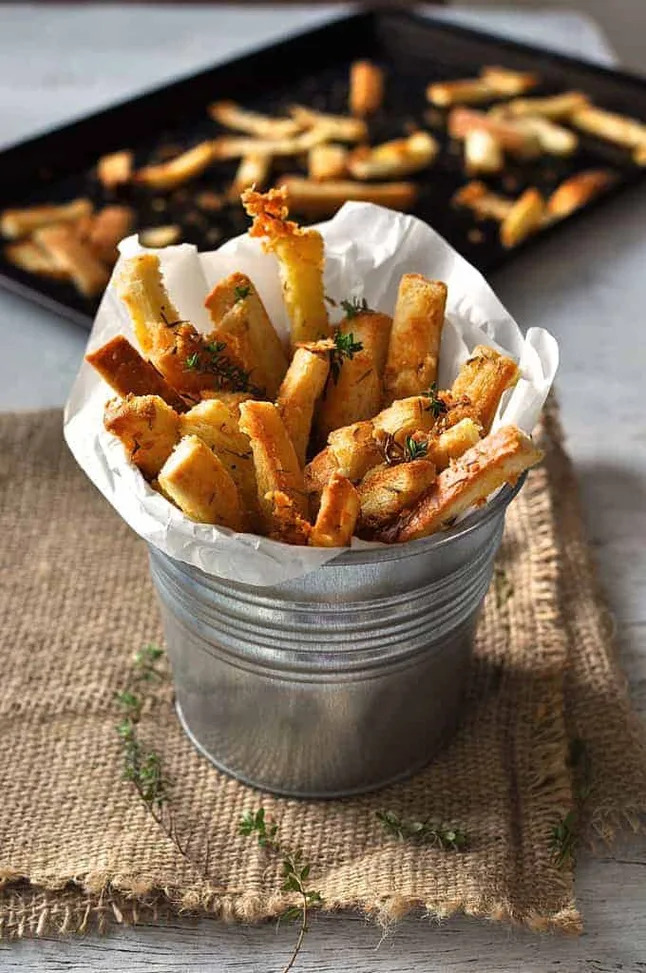

Parmesan Thyme Bread Crust Snacks
Home | Breakfast | Lunch | Afternoon Snack | Dinner | Drinks
These irresistible Parmesan Thyme Bread Crust Snacks are made using bread crust off-cuts.I dont know about you but my freezer is valuable real estate. So when I opened it the other day to realise that my bag of bread crusts were taking up an inordinate amount of space, I decided I needed to do something about it.

Ingredients
- 6 cups bread crusts
- 7 - 8 tbsp olive oil
- 1/3 cup parmesan cheese , grated
- 1 1/2 tsp dried thyme
- 1/2 tsp salt (or to taste)
- Black pepper
- Optional - fresh thyme to garnish
Steps
- Preheat oven to 180C/350F.
- Place bread crusts in bowl. Drizzle over olive oil, tossing the bread crusts as you go (with your other hand) so as to distribute the olive oil as evenly as possible.
- Add remaining ingredients and use hands to toss through the bread crusts.
- Spread out over 2 baking trays. Do a taste test to make sure it is seasoned to your liking - adjust if required.
- Bake for 5 to 8 minutes until golden brown and crunchy (check the ones in the middle of the tray). The tray on the top shelf will be ready first. The bottom tray will take a couple of minutes longer.
Enjoy your delicious bread crust snacks! - Dave Mathew